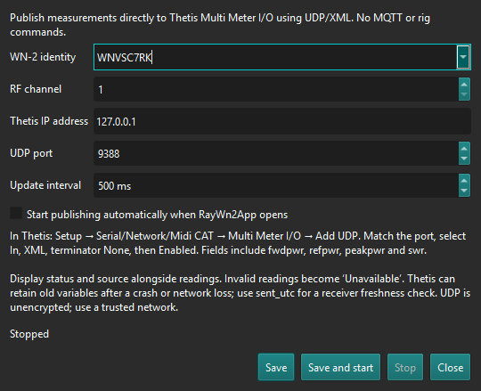

Direct Thetis telemetry
On this page
- Send WN-2 readings directly to Thetis
- Configure Thetis reception
- Add the readings to a Thetis container
- Automatic startup
- Freshness and stopped data
Send WN-2 readings directly to Thetis
RayWn2App can publish one selected WN-2 channel directly to Thetis. MQTT is not required. Connect the desired WN-2 first, then open Tools → Thetis Telemetry.
Configure Thetis reception
- In Thetis, open Setup → Serial/Network/Midi CAT → Multi Meter I/O.
- Add a UDP connection. For both programs on the same computer, use 127.0.0.1:9388.
- Select direction In, format XML, terminator NONE, and enable the connection.
- In RayWn2App, select the matching destination, WN-2 identity and RF channel, then Save and start.

Select the channel to publish here; a Thetis container number does not select a WN-2 channel. Select image to enlarge.

UDP is a way to send data across the local network. Use a trusted network for a separate Thetis computer, with matching destination settings. This connection does not key or tune the radio.
Add the readings to a Thetis container
In Thetis Setup → Appearance → Meters/Gadgets, select your container. Choose Text Overlay, click the right arrow to add it, then select the overlay to edit it. Enter the desired text in both RX Text and TX Text if it should appear in receive and transmit. The % button opens the variable picker. Select the incoming WN-2 fields using the connection ID shown in your own Variables table. Useful fields are peakpwr for forward peak watts, refpeakpwr for reflected peak watts, swr, device, channel and status. Average watts are fwdpwr and refpwr. Include status so unavailable data is not mistaken for live data. Enable Show RX/Show TX for the container, then Apply/OK. If it is off-screen, use Recover Container. Thetis's ordinary internal power meters do not automatically become WN-2 meters merely by adding them.
Automatic startup
Enable Start publishing automatically when RayWn2App opens and Save if wanted. This starts the saved publishing configuration, not the WN-2 connection. Until the source connects, unavailable status is sent. Stop ends this session; clear the startup option to prevent the next automatic start.
Freshness and stopped data
Normal Stop/shutdown sends a stopped status. A crash or network failure can prevent it arriving, and Thetis may retain an old value. Check incoming timestamps/status and use a receiver-side timeout where configured. Do not use an old retained number as a current station reading.
Help home · RF StateSide · RayWn2App operator guide